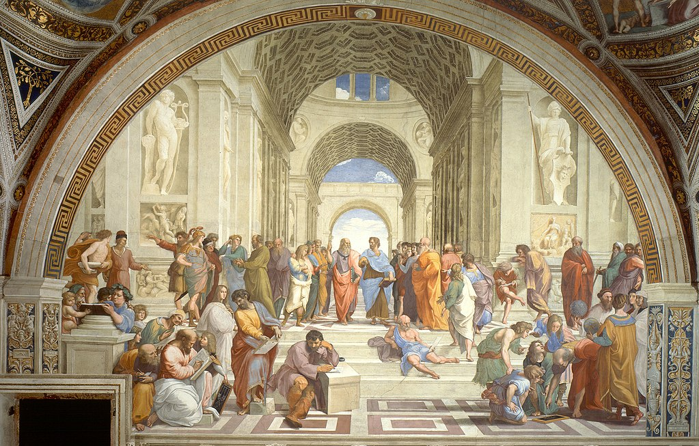
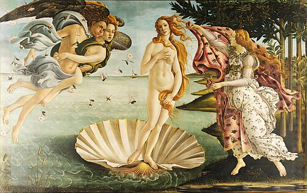
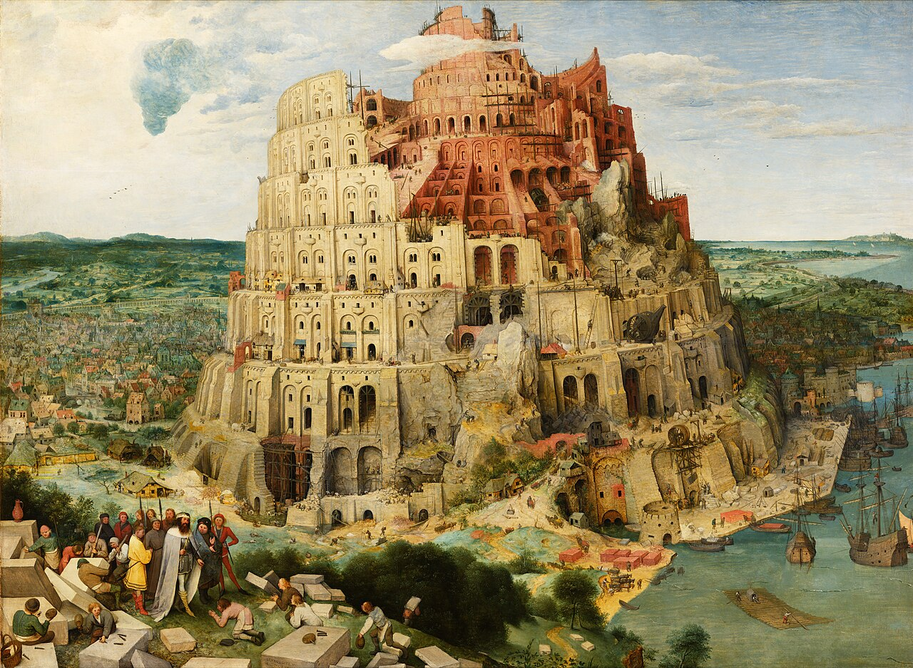
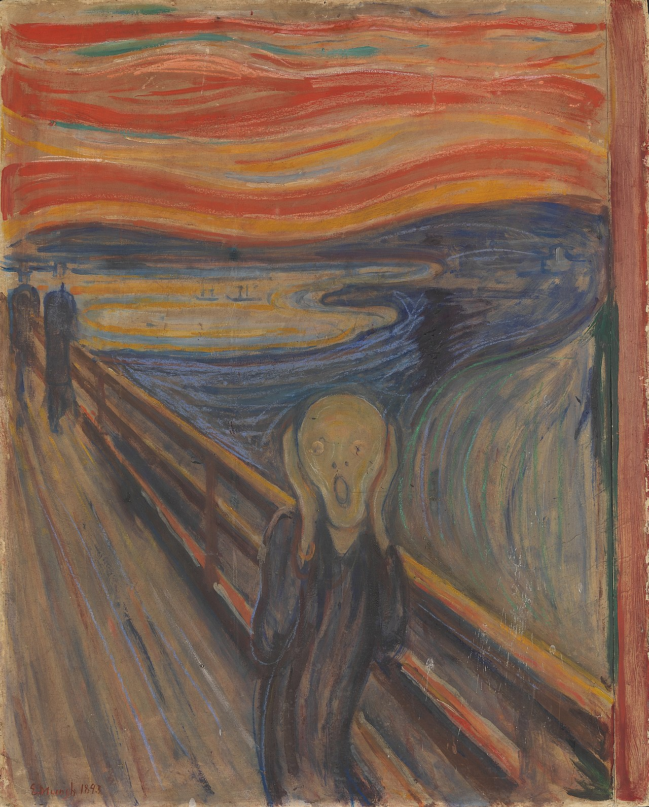
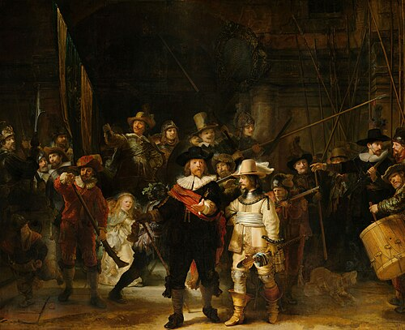
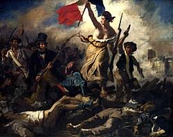

Foundation of Thought
Observe the architectural dominance; logic contained beneath three grand arches.

Divine Arrival
Anchored visually by the massive, one golden shell upon which she stands.

Decay of Time
Broken by the inevitable decay of the four melting clocks scattered across the dreamscape.

Northern Enigma
Attention redirects to the heavy, one luminous pearl reflecting hidden light.

Royal Illusion
Hierarchy rests squarely on the five central attendants in the foreground.

Collapse of Ambition
A spiral foundation perfectly segmented into nine descending tiers.

Echo of Despair
Amplified by the indifference of the two distant figures walking away.

Armed Guard
In the chaos, the sharp vertical lines of the six raised pikes pierce the dark.

Price of Freedom
Grounded by the grim reality of the five fallen martyrs broken beneath her feet.

Fury of the Sea
Stillness watching the struggle of the three fragile boats caught in the swell.